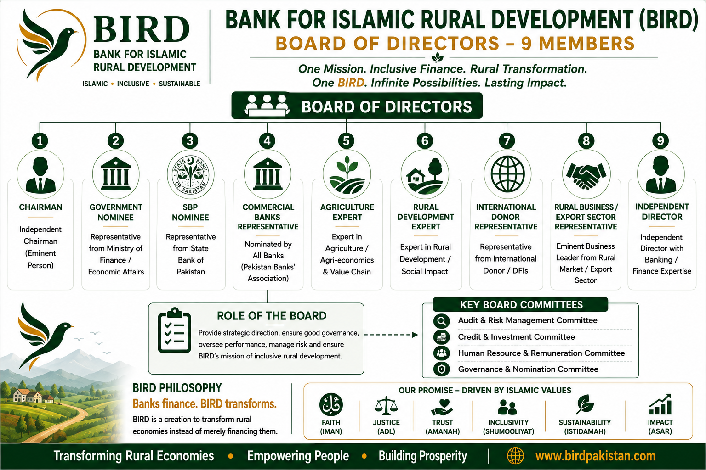
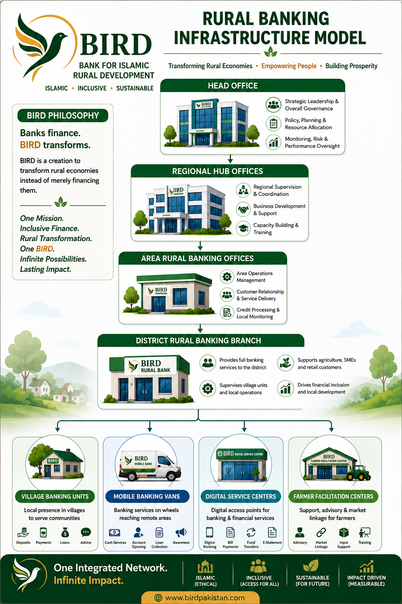

BIRD's proposed governance model combines Board accountability, independent Shariah oversight, executive discipline and a rural delivery architecture designed to keep decision-making connected with communities.
Strong governance is intended to protect capital, customers, Shariah integrity and the transformation mandate simultaneously.
Strategic direction • governance • risk appetite • performance • stakeholder accountability.
Independent Shariah oversight • product review • execution discipline • ethical finance.
Strategy execution • financial sustainability • operations • technology • rural transformation delivery.

BIRD's operating architecture is designed to translate institutional standards into local execution while bringing field intelligence back into management decisions.

Standards flow downward; field intelligence, exceptions and transformation outcomes flow upward. This creates accountability without losing local context.